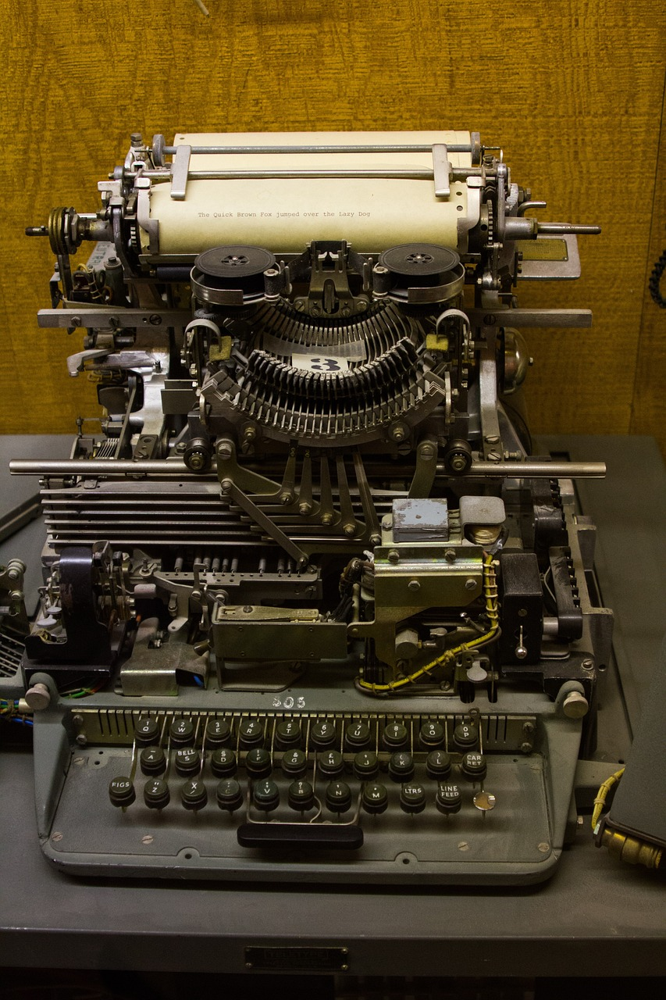

Intro
Human Computer Interaction
Från hålkort till multimodala gränssnitt. Scrolla själv eller välj autoscroll högst upp i vänster hörn för att ta dig igenom epokerna och utforska hur interaktionen mellan människa och dator har förändrats.
Epok 1
No Interaction Era
≈ 1940–1960
Datorn är inte något användare kan interagera med direkt. Instruktioner förbereds i förväg och resultatet kommer långt senare, ofta som utskrift. Det innebär att datorn är mer av en svart låda — något mystiskt och avlägset, snarare än ett verktyg eller en partner i interaktion.
Epok 2
Command Era
≈ 1960–1980
Det är nu som interaktionen blir mer direkt. Med tangentbord och terminaler kan användare skriva kommandon och få respons i realtid. Det är fortfarande en ganska teknisk och krävande interaktion, men det är en stor förändring jämfört med tidigare. Datorn börjar bli mer av ett verktyg, även om det fortfarande krävs mycket kunskap och träning hos användaren för att använda det effektivt.


Epok 3
GUI Era
≈ 1980–2007
Tillkomst av grafiska gränssnitt gör datorn mer visuell, tillgänglig och lättare att förstå. Fönster, ikoner, menyer och musen förändrar allt och gör det möjligt för fler människor att använda datorer utan att behöva lära sig kommandon. Detta är en stor demokratisering av tekniken.
Epok 4
Touch Era
≈ 2007–2015
Interaktion blir fysisk där avnändare kan använda sina fingrar för att interagera med skärmen. Fingrar ersätter därmed pekare och gränssnittet upplevs mer som något direkt manipulerbart. Användare kan nu svepa, nypa och trycka på skärmen, vilket gör interaktionen mer intuitiv och tillgänglig för en ännu bredare publik.
Epok 5
Multimodal Era
≈ 2015–nu
Interaktion sker nu genom flera kanaler samtidigt. Det kan vara röst, blick, rörelse, touch och AI. Gränssnittet blir allt mer osynligt. Och det är inte längre bara verktyg — det är en del av vår omgivning. Det har flera konsekvenser, både positiva och negativa, för hur vi upplever och förhåller oss till tekniken.
Outro
Vad kommer härnäst?
När interaktion blir mer naturlig och mer osynlig förändras inte bara verktygen — utan också relationen mellan människa och teknik. Många designers funderar nu på var gränsen går mellan det som är mänskligt och det som är tekniskt, och hur vi kan skapa en mer hållbar och etisk interaktion i framtiden.